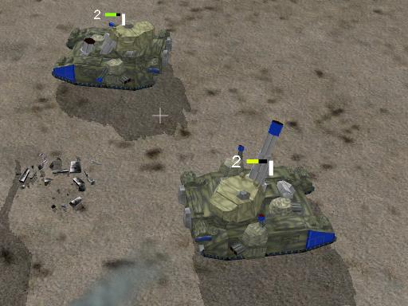

Epic 40000

|
Warning! This page is outdated! The information displayed may no longer be valid, or has not been updated in a long time. Please refer to a different page for current information. |
{kind=link}

The Epic mod is still being made, goto the mods or TAU to check out how its progressing.
Note by Guessmyname (one of the modellers): We have loads of models, but we're waiting for the new model format (unless you really want to have pink Leman Russ tanks). The above Baneblade was made by Benito, and as you may have noticed, is having a bit of trouble aiming properly because Spring calls the Aiming scripts near-constantly instead of once like in normal TA. - EDIT: This was fixed a while ago by the way (GMN again)
This mod is meant to go with zwszg's upcoming conversion of WTA into Spring (Space Marines and Eldar). We will add the Imperial Guard and the Tau, and probably the Chaos Space Marines and Necrons. Tyranids, Mutants (Lost and the Damned) and Orks, being very organic and that will probably have to wait for the new unit format if there is one.
Work in progress
- Imperial Guard
- Super Heavy Battle Tanks[2]
- Baneblade - Modelled & scripted, needs texturing & new weapons* - Benito
- Shadowsword - Modelled & scripted, needs texturing & new weapons* - Benito
- Super Heavy Battle Tanks[2]
- Titan Legions
- Warhound Scout Titan - Modelled & scripted(basic), needs texturing & weapons* - Benito
- Reaver Titan - Modelled, needs textures, script, and weapons* - Benito
- Imperial Navy
- Thunderbolt Fighter - Modelled, needs textures script & weapons* - j5mello
* by weapons we mean not the standard TA weapons which are being used as placeholders
All the other IG stuff, save super heavies and aircraft - modelled, conversion to new format in progress. -Guessmyname
We need people to model the buildings & aircraft. Forum for the mod thru TAU: Link. Mod Website: Link
RESOURCE METHOD
Metal: Ore, or if you prefer, planetary resources.
IMPERIAL GUARD
(NOTE units with an M next to their name are modelled)
Command HQ
- Imperial Guard Recruitment Centre
- Guardsman Squad - Lasguns (M)
- Guardsman Squad - Flamer (M)
- Guardsman Squad - Plasma Gun (M)
- Guardsman Squad - Meltagun (M)
- Guardsman Squad - Grenade Launcher (M)
- Fire Support Team - Heavy Bolter (M)
- Fire Support Team - Autocannon (M)
- Anti-Tank Team - Missile Launcher (M)
- Anti-Tank Team - Lascannon (M)
- Mortar Team (M)
- Snipers (M)
- Commissar (M)
- Tech Priest Enginseer
- Elite Infantry Centre
- Tech Priest Enginseer
- (see first Enginseer Entry above)
- Command HQ
- (see first Command HQ Entry above)
- Cadian Kasrkin Squad - Hellguns
- Cadian Kasrkin Squad - Flamer
- Cadian Kasrkin Squad - Plasma Gun
- Cadian Kasrkin Squad - Meltagun
- Cadian Kasrkin Squad - Grenade Launcher
- Ogryns
- Rough Riders (M)
- Lieutennant
- Tech Priest Enginseer
- Heavy Flamer Turret Emplacement
- Mortar Emplacement (M)
- Missile Emplacement (M)
- Heavy Bolter Pillbox (M)
- Command Pillbox (M)
- Autocannon Pillbox (M)
- Imperial Guard Vehicle Centre
- Chimera (M)
- Chimera - Autocannon (M)
- Chimera - Heavy Bolter (M)
- Chimera - Heavy Flamer (M)
- Hellhound (M)
- Towed Cargo Flatbed (Energy storage + Solar) (M)
- Trojan Support Vehicle (Transports towed guff) (M)
- Atlas Recovery Vehicle (Repairs tanks) (M)
- Sentinel - Multi Laser (M)
- Sentinel - Missile Launcher (M)
- Salamander Command Vehicle (M)
- Salamander Scout Vehicle (M)
- Cyclops Demolition Vehicle (M)
- Revealer Radar Vehicle (M)
- Concealer Radar Jammer (M)
- Imperial Engineering Vehicle (M)
- Earthshaker Cannon Platform (M)
- Hydra Emplacement (M)
- Manticore Missile Platform (M)
- Imperial Turret Emplacement
- Tarantula Sentrygun - Heavy Bolter (M)
- Tarantula Sentrygun - Lascannons (M)
- Imperial Gun Tower (M)
- Sentry Tower (M)
- Imperial Tank Manufactorum (M)
- Griffon Mortar (M)
- Leman Russ (M)
- Leman Russ Demolisher (M)
- Leman Russ Exterminator (M)
- Leman Russ Executioner (M)
- Leman Russ Conqueror (M)
- Leman Russ Vanquisher (M)
- Hydra Flak Tank (M)
- Destroyer Tank Hunter (M)
- Imperial Airfield
- Aquila Lander (M)
- Vulture Gunship - Air to Air Missiles
- Vulture Gunship - Air to Ground Missiles
- Vulture Gunship - Bombs
- Vulture Gunship - Multilasers
- Vulture Gunship - Autocannons
- Thunderbolt Fighter (M)
- Valkyrie - Heavy Bolters
- Valkyrie - Rocket Pods
- Lightning Attack Fighter
- Lightning Strike Fighter - Air to Air Missiles
- Marauder Bomber
- Marauder Destroyer (Hellstrike Missiles)
- Imperial Artillery Centre
- Thunderer Seige Tank (M)
- Bassilisk Artillery Tank (M)
- Medusa Heavy Mortar (M)
- Manticore Missile Tank (M)
- Imperial Bombard (M)
- Towed Bassilisk (M)
- Towed Manticore (M)
- Imperial Super Heavy Tank Centre
- Stormblade
- Stormsword Super Heavy Seige Tank
- Baneblade Super Heavy Tank (D)
- Shadowsword Titan Hunter (D)
- Elite Infantry Centre
- Logistics Centre (Solar) (M)
- Logistics Storage (energy storage) (M)
- Sandbags NS (M)
- Sandbags EW (M)
- Pillbox (Building that loads infantry and gives them protection) (M)
- Sandbag Bunker (Like the pillbox but cheaper, less protection and more room to stuff Guardsmen in) (M)
- "Dragons Teeth" Tank Traps (M)
- Imperial Flag (fun) (M)
- Imperial Ore Extractor (M)
- Radar Station (M)
- Sentry Tower (M)
Back to Mods
|
|
This site is kept for historical reasons, all mods here are incompatible to the current spring engine, maybe they work with an older version of the Engine. |
- please use Category:Games if you search for playable games!